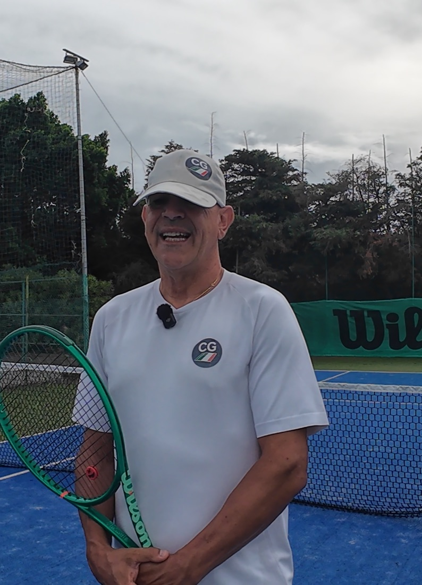

Non sei bloccato perché ti manca talento.
Forse stai cercando di correggere il punto sbagliato. Il colpo che sbagli quasi mai è il problema: è l'ultimo anello di una catena che parte prima. Io lo chiamo Blocco Madre™.
I dati della prenotazione servono solo a fissare la call. Privacy

Il colpo che vedi sbagliare non è il problema.
In questo video ti racconto come sono arrivato al Blocco Madre e come lo trovo. Tu vedi il rovescio che crolla. Io vedo il piede che si è fermato mezzo secondo prima.
Voglio trovare il mio Blocco Madre →In allenamento giochi bene. In partita sparisci.
Magari giochi al circolo una, due o tre volte a settimana. Hai preso lezioni, cambiato racchetta, guardato video su YouTube. Ma sotto sotto senti di essere sempre lì.
- Il servizio che entrava si spegne sulla rete.
- Arrivi leggermente tardi e stringi il braccio.
- Dopo due errori non giochi più per vincere: giochi per non sbagliare.
Prima della correzione serve una diagnosi.
Nel tennis degli adulti non puoi correggere bene qualcosa se prima non hai capito da dove nasce davvero l'errore. Ogni consiglio può essere giusto, preso da solo: ma se non sai qual è la tua priorità, ogni consiglio diventa rumore.
Una priorità, non dieci difetti.
Prenota la diagnosi gratuita →Non è un nome messo lì per fare marketing. È una sequenza.
Chiarezza
Qual è il blocco. Uno solo, non dieci.
Analisi video
Il tuo tennis vero, non quello delle lezioni.
Movimento
Appoggi e tempi, perché lì nasce quasi tutto.
Piano pratico
Adattato ai tuoi orari, non a quelli di un professionista.
Obiettivo
Un numero in partita che puoi contare da solo.
Reset Tennis 30™: quattro settimane, uno a uno, tutto online.
Trovo il tuo Blocco Madre
E ti do una priorità sola su cui lavorare.
Esercizi brevi
Adatti al tempo che hai davvero, con la verifica sui tuoi video.
Partita vera
Giochi e misuriamo cosa è cambiato, con un numero.
Non ti prometto la classifica e non ti prometto di vincere di più: ti prometto che saprai su cosa stai lavorando e perché.
Si parte dalla diagnosi gratuita →Il prezzo te lo dico in call, dopo la diagnosi: prima capiamo se ha senso lavorare insieme.
Mi chiamo Giovanni Leto. Coach Giovy.
Ho iniziato a dieci anni e per anni il campo è stato tutto. Poi gli infortuni hanno chiuso il sogno di diventare professionista, e ci ho messo tempo a capire una cosa semplice: non dovevo essere io in campo per essere utile.
Ho allenato in Italia, in Vietnam, in Thailandia e negli ultimi anni in un circolo in Calabria. E allenando adulti ho visto sempre lo stesso schema: persone motivate, che amano davvero il tennis, bloccate non per mancanza di voglia, ma perché si allenano sul problema sbagliato.
Tu vedi il rovescio che crolla. Io vedo il piede che si è fermato mezzo secondo prima.
Il corso di Bangkok, raccontato da chi c'era.
Recensioni registrate a fine corso Tennis Power Formula, a Bangkok, nell'ottobre 2025. Ognuna parla nella sua lingua: sotto trovi la traduzione in italiano.
«Prima di Tennis Power Formula ero incostante e non avevo un vero piano di allenamento. Dopo circa sei settimane sono diventato molto più costante e anche più forte mentalmente in campo: le tecniche di respirazione e di mentalità mi aiutano a restare calmo sotto pressione.»
«Prima mi allenavo senza nessuna continuità. Con il coach ho trovato stabilità di palla, chiarezza e fiducia. Abbiamo lavorato soprattutto sul passaggio dal servizio alla volée e sulla risposta alle palle veloci: oggi le gioco con sicurezza.»
«Le tecniche e il modo di pensare il gioco che ho imparato hanno cambiato completamente il mio tennis rispetto a quello che avevo studiato prima. Consiglio a tutti di conoscere Tennis Power Formula.»
«Dopo sei-sette settimane con Coach Giovanni sono migliorata molto nei colpi da fondo, nel fisico e nel gioco: sono più costante. È davvero bravo.»
Prima di prenotare
Com'è fatta la diagnosi gratuita?
Trenta minuti in videochiamata con Google Meet. Guardiamo il tuo gioco insieme, ti faccio qualche domanda e ti dico cosa vedo. Se ha senso lavorare insieme te lo dico; se non ha senso, te lo dico lo stesso.
Devo essere un giocatore forte?
No. Il percorso è per adulti che giocano al circolo, fanno qualche torneo o le sfide con gli amici, e sentono di essere fermi allo stesso livello.
Quanto tempo serve a settimana?
Poco, ma fatto bene: esercizi brevi costruiti sui tuoi orari reali. L'idea è fare meno cose, ma quelle giuste.
Vivo all'estero o viaggio spesso: funziona lo stesso?
Sì, è tutto online. La pagina di prenotazione ti mostra gli orari nel tuo fuso orario.
Quanto costa Reset Tennis 30?
Te lo dico in call, dopo la diagnosi. Prima capiamo insieme qual è il tuo Blocco Madre e se il percorso fa per te.
Your stroke is not the problem. Find your Mother Block.
If you train, take lessons and still freeze at the same moments in matches, you are probably not missing another drill. You are missing the one error that drives all the others.
Reset Tennis 30™ is a four-week, one-to-one online program for adult players. It always starts with a free 30-minute video call, and the booking page shows the times in your own time zone.
Book your free call →Smetti di correggere sintomi.
Scopri qual è il tuo Blocco Madre in 30 minuti, gratis.
Prenota la diagnosi gratuita →